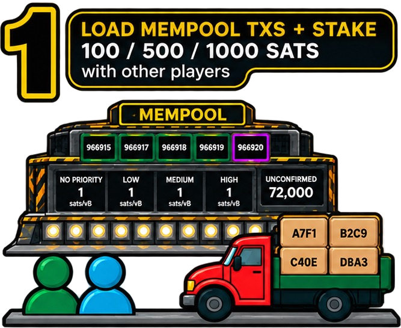
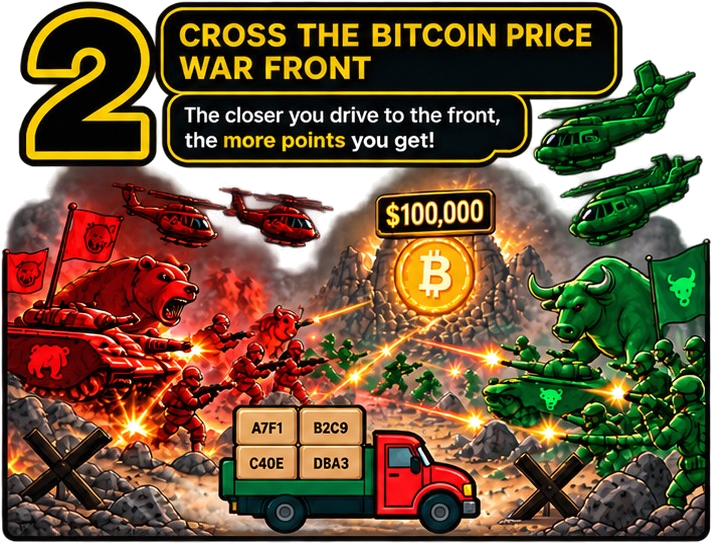
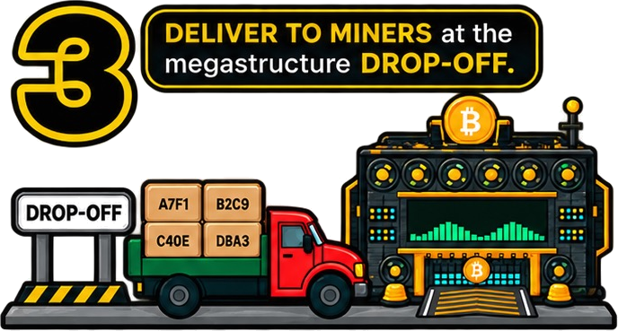
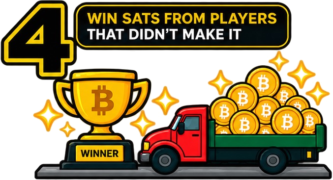

It holds what you play with and what you win, in this browser. Keep its 24 words - or your Nostr key - to open it anywhere.
Questions? Join the community on Armada
Games and prediction markets for bitcoin, run by independent nodes.



